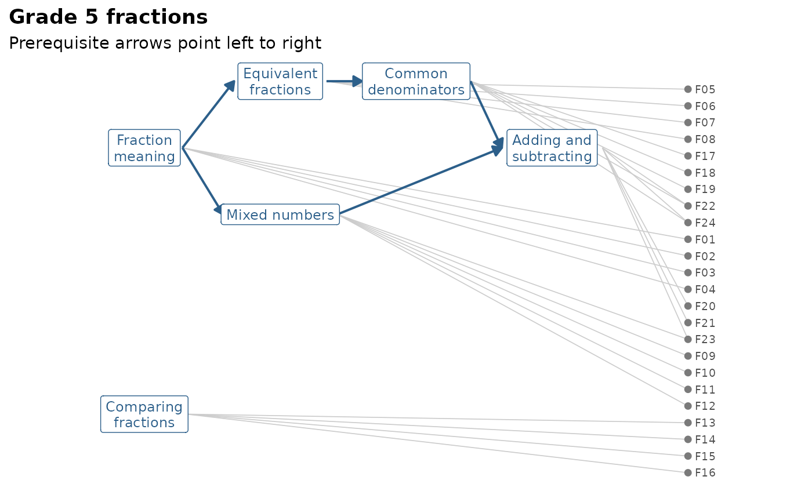

Simulated right/wrong responses of 1,200 Grade 5 students to a fictional 24-item fractions test, and the knowledge graph the curriculum team wrote for it. The graph has six concepts (fraction meaning, equivalent fractions, mixed numbers, comparing fractions, common denominators, and adding and subtracting), the prerequisite edges between them, and the concepts each item measures; three items measure two concepts.
Format
fractions is a data frame with 1,200 rows and 25 columns: id
(student ID) and F01 to F24 (1 = correct, 0 = incorrect).
fractions_kg is an mv_kg knowledge graph with 6
concepts, 24 items, 5 prerequisite edges and 27 item-to-concept links.
An object of class mv_kg of length 3.
Details
Students' proficiency in a concept was simulated from their proficiency
in its prerequisites plus new learning, and items deeper in the learning
order are harder, so the data carry the structure of a real learning
progression. The published graph is not quite the graph the data were
simulated from: Some problems were planted on purpose for practice in
checking a graph against data; lab_truth("fractions") lists them and
returns the true graph and parameters.
See also
fraction_subtraction for real data with a Q-matrix;
mv_kg_check() and gg_kg().
Examples
fractions_kg
#> <mv_kg> Grade 5 fractions: 6 concept(s), 24 item(s)
#> Edges: 5 prerequisite, 0 related, 27 measures
#> Learning order (by prerequisite depth):
#> 0: meaning, compare
#> 1: equivalent, mixed
#> 2: common_denominator
#> 3: add_subtract
gg_kg(fractions_kg)

colMeans(fractions[, -1])
#> F01 F02 F03 F04 F05 F06 F07 F08
#> 0.7775000 0.7308333 0.8075000 0.8075000 0.5341667 0.5600000 0.6208333 0.6433333
#> F09 F10 F11 F12 F13 F14 F15 F16
#> 0.5966667 0.6116667 0.5983333 0.5858333 0.5000000 0.5141667 0.4900000 0.4675000
#> F17 F18 F19 F20 F21 F22 F23 F24
#> 0.4283333 0.4808333 0.5408333 0.3450000 0.4033333 0.4883333 0.3800000 0.3100000